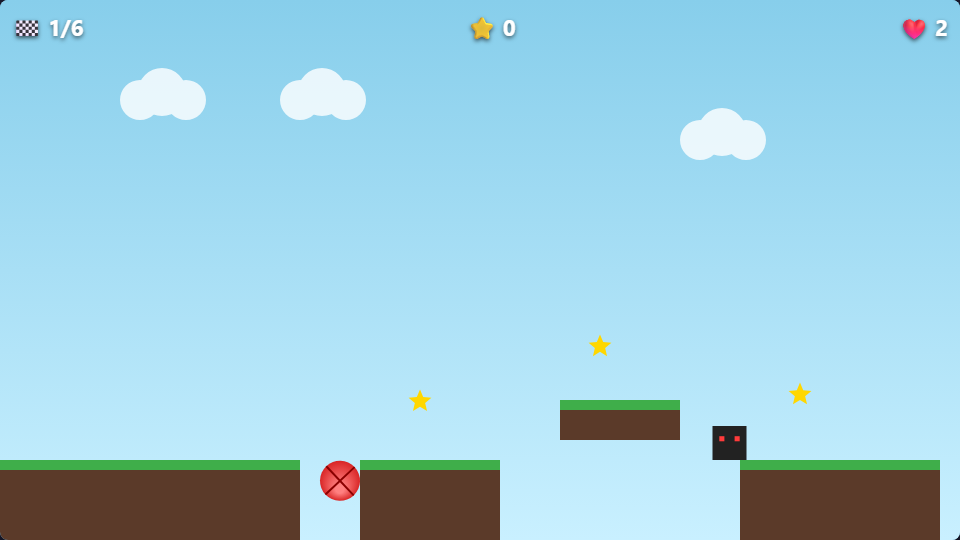

6 уровней
От простых прыжков до движущихся платформ, шипов и летающих врагов.
Работает офлайн
Играй в браузере без интернета после первого захода — прогресс не теряется.
Собирай звёзды
Уклоняйся от врагов или запрыгивай на них сверху, собирай звёзды на каждом уровне.
Android APK
Скачай и установи напрямую — без магазинов приложений и лишних разрешений.
Как установить APK на Android
- Нажми «Скачать APK» выше и дождись окончания загрузки.
- Открой скачанный файл
ball-quest.apk. - Если появится предупреждение «Установка из неизвестных источников» — разреши установку для этого файла (это стандартное поведение Android для APK не из Google Play).
- Нажми «Установить» и запускай игру с рабочего стола.
Управление
← → или A / D — катиться. Пробел, W или ↑ — прыжок.